RESTful Services with ORDS, SQL Developer Web and Oracle Autonomous Database
Before You Begin
Oracle REST Data Services (ORDS) provides RESTful Web Services for your Oracle Autonomous Database. Automatic REST endpoints can be enabled to provide INSERT, UPDATE, DELETE, and SELECT access to your Oracle TABLEs. Custom SQL and PL/SQL operations backing your RESTful Services can also be defined. Responses are in JSON or optionally CSV or media resources.
SQL Developer Web also provides a query interface for your Oracle Autonomous Database in your browser, making it easy to work with your new Oracle service, with minimal setup and configuration on your local environment.
In this lab you will learn the following:
Access an Autonomous Database using SQL Developer Web
‘Query’ a table via the REST Endpoints
Generate Swagger/JSON for the TABLE API
Use cURL to PUT changes to an existing record
Use cURL to POST a new record
Background
Installed Software:
Oracle Autonomous Database
Oracle SQL Developer Web 19.1
Browser Support: Chrome, Mozilla, Internet Explorer, Safari
cURL Command Tool
Time: 20 minutes
What Do You Need?
This Hands on Lab will be used at Oracle Open World 2019. The computer room for this lab is set up where your SQL Developer Web access will correspond to your seat number. For example, if you are at seat 1, your username will be ords_lab1. If you're at seat 2, it will be ords_lab2 and so on. All user passwords are the same. The examples in this lab will be using the ords_lab1 user so the images on your screen will be slightly different.
Access an Autonomous Database using SQL Developer Web
If you are at seat 1, the access url and username will correspond to your seat number. The examples for this lab will be for the ords_lab1 user.
Open the browser on the desktop and enter the following SQL Developer Web url:
Note that if you are at a different seat, your user will be different. Replace the ords_labx in the url to your correct user.
This will take you to the SQL Developer Web login screen. Enter the following username and password and sign in.
Username: ords_labx
Password:
aaaaBBbcc987654
Note that if you are at a different seat, your username will reflect your seat number. It can be ords_lab2, ords_lab3 and so on. The password is the same for all users.
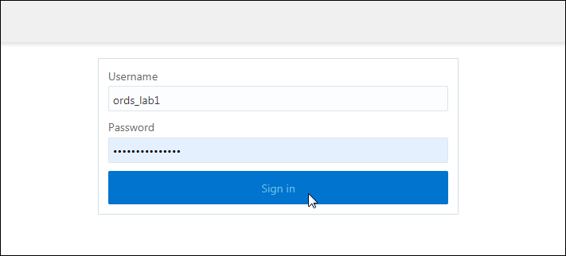
‘Query’ a table via the REST Endpoints
You are now in the SQL Developer Web Home page. The Home page contains widgets that provide a general overview of the activity and status in SQL Developer Web. You will also see tabs for the Worksheet and Data Modeler page. The Worksheet page provides a code editor that is used to enter and execute SQL and PL/SQL statements. The Data Modeler page provides an integrated version of Oracle SQL Developer Data Modeler with basic reporting features.
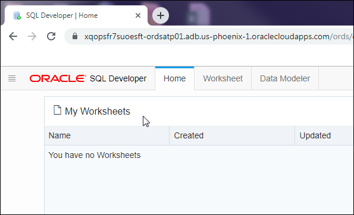
In this lab, you will be working in the Worksheet page so click on Worksheet. The first time you access the Worksheet page, a Help widget will display a quick tutorial on the key features in the Worksheet. Click on Next go to next item or x out of the widget.
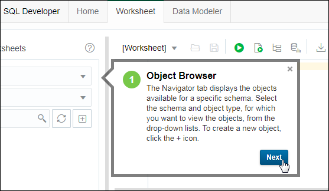
The Worksheet page consists of the left pane for navigating worksheets and objects, the editor for executing SQL statements, and the output pane for viewing the results.
The table ORDERS is displayed. Expand the table to view all the fields.
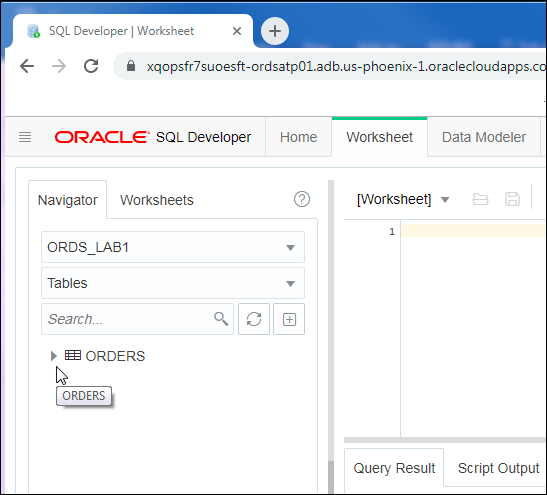
To view all the rows in the ORDERS table, navigate to the worksheet and enter the following query. Click on Run to excecute the statement.
Select * from orders
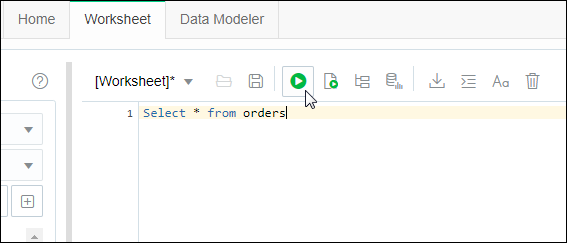
The results are displayed in the Query Result pane.
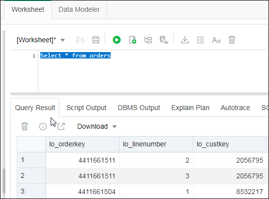
In Oracle Autonomous Database databases, the ADMIN user is pre-enabled for SQL Developer Web. To use Oracle SQL Developer Web, you must sign in as a database user whose schema has been enabled for SQL Developer Web.
In this lab, the schema ords_labx and the ORDERS table is already REST enabled. This allows for REST calls to be executed on the ORDERS table.
Enter the following url in the browser to query all the data in the ORDERS table.
Note that if you are at a different seat, your schema will reflect your seat number. You will need to replace the ords_labx to either ords_lab2, ords_lab3 and so on. This applies to all urls that are used as examples in the lab.
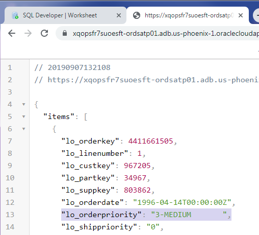
Generate Swagger/JSON for a TABLE API
REST Enabled tables include an endpoint for getting its REST API information. Enter the following URL to get the ORDS table OpenAPI json documentation.
Once you have generated your table API, you can use Swagger to return a YAML or JSON that contains a detailed description of your entire API.
Open a new browser tab and enter the following url to take your to a Swagger Editor:
http://editor.swagger.io/
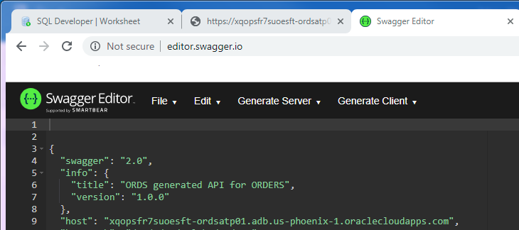
The ORDERS API is automatically displayed in the Swagger Editor. Scroll down right side pane to view the the ORDS generated API for ORDERS. Click on any of the actions like GET to display more detail.
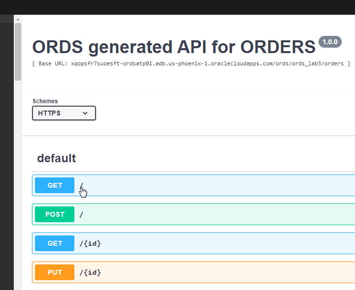
Use cURL to PUT changes to an existing record
In this section, you will make an update to an existing record. Enter the following url to go to a single record. The order priority is currently set at HIGH, update the order priority to URGENT.
Scroll down the page and you will see the generated record url. Copy this url and paste it to a Text Editor like Notepad. You will need it for your cURL command in the next steps.
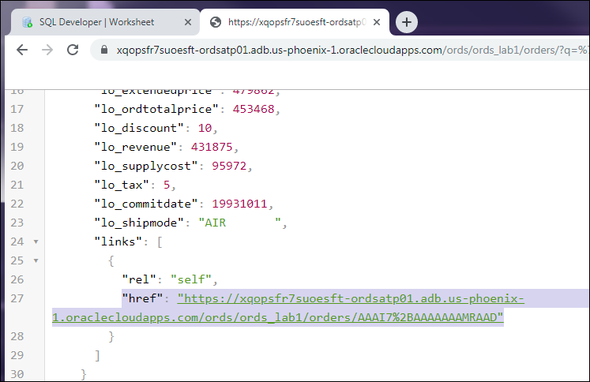
The json can be copied directly from the browser and saved to a file. Copy the following json and paste it to a Text Editor.
Update the record by changing the order priority to URGENT. Find the line: "lo_orderpriority": "2-HIGH ", in the text file and replace it with the following:
"lo_orderpriority": "1-URGENT",
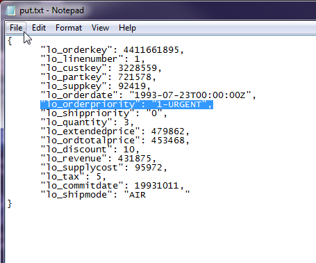
Save the file as put.txt and save it to the Desktop.
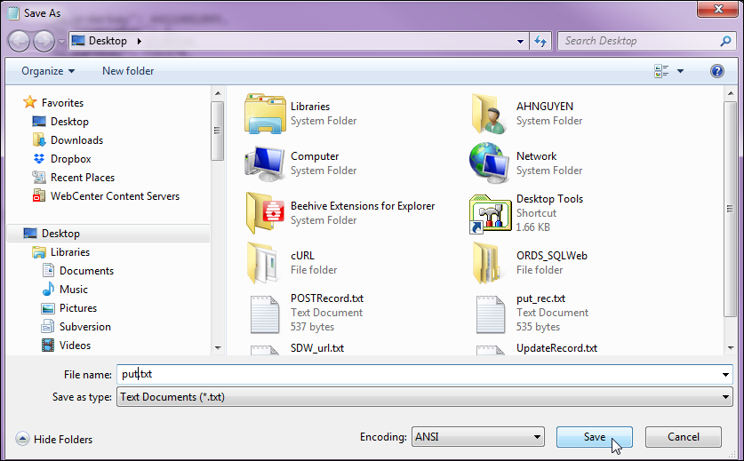
REST endpoints can be defined along with basic operations including create, query, update and delete. The PUT method will be used to apply this update. You will use the command-line tool cURL to transfer the data.
Go to the Start Menu and type cmd to open the Command Prompt.
Type the following to navigate to the Desktop.
cd Desktop
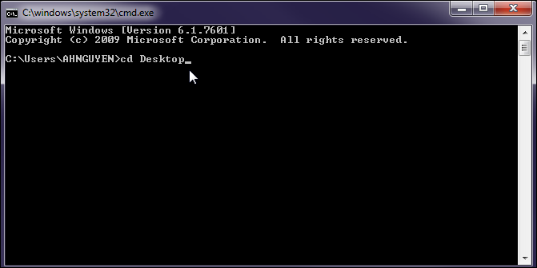
Executing the following cURL command will apply the update to the record. This command is an example for the ords_lab1 user. You will need to modify it to reflect your username and the local file path where the put.txt is saved to.
Copy and paste the cURL command to a Text Editor or in the command line and apply the changes to the bolded text before executing it.
Note that back in Step 2, you saved a generated record url. This is the where you would apply that url.
Executing following cURL command will insert the new record. This command is an example for the ords_lab1 user. You will need to modify it to reflect your username and the local file path where the post.txt is saved to.
Copy and paste the cURL command to a Text Editor or in the command line and apply the changes to the bolded text before executing it.
After executing the command, the Response will be displayed. The new record has been added and a url to the record is generated. This is the generated url for ords_lab1 user. Your generated url will be slightly different. Copy this url to view the record in the browser.
 RESTful Services with ORDS, SQL Developer Web and Oracle Autonomous Database
RESTful Services with ORDS, SQL Developer Web and Oracle Autonomous Database Before You Begin
Before You Begin